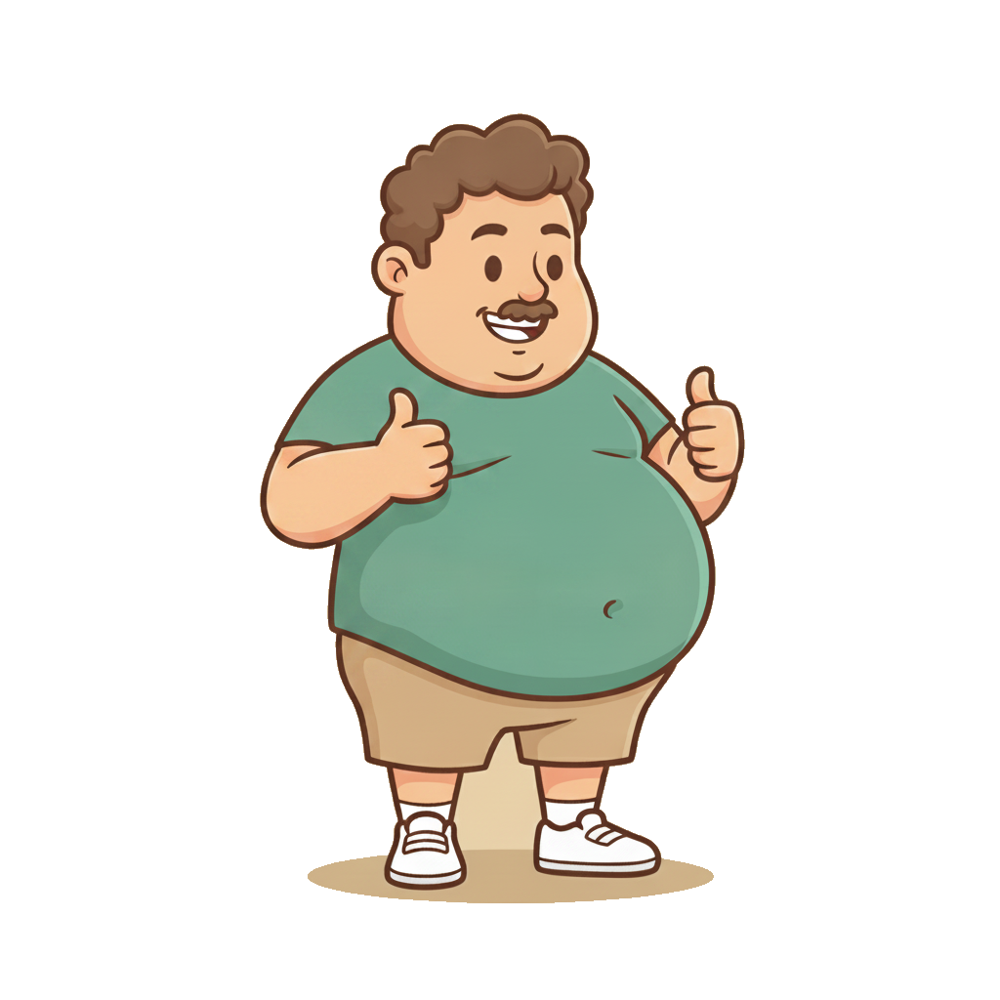
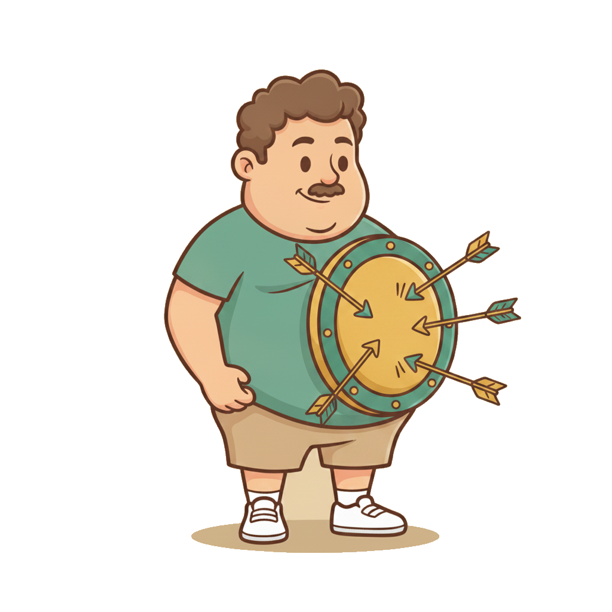

Отдел контроля
качества на AI
Как контролировать 100% коммуникаций, находить недожатые сделки и превращать контроль качества в самоокупаемую функцию — воронку дожима.

Мы научились строить коммуникации.
Теперь — контролировать их
- Собрали скрипт — но исполняет ли его команда в каждом звонке?
- Где мы теряем сделки в коммуникации — и как их вернуть?
- Как выстроить инструмент дожима, который приносит деньги?

Живыми людьми качество
коммуникаций не померяешь
- Асессор с чек-листом на 30 пунктов слушает ~20–25 звонков в день
- Это физически несопоставимо с реальным объёмом
- А качество коммуникации — один из главных факторов конверсии

Контролировать нужно каждую коммуникацию
Логика JTBD
Ценность = выгода − затраты (в т.ч. эмоциональные и энергетические). Заплатил больше, чем получил → разочарование, не вернётся. Сервис на уровне — фундамент капитализации, особенно в премиуме.

Замеряй экономику этой функции отдельно. Если близко нет к этим цифрам — «ручка требовательности» не выкручена.

Три пласта — не только «надзор»
над отделом продаж
Контроль исполнения
Скрипт, плейбуки, этапы воронки, регламенты — соблюдаются или нет.
Количественный каст-дев
10 000 звонков через управленческие фреймворки → инсайты, которые сам добывал бы месяцами.
Воронка дожима
Самоокупаемость: возвращаем недожатые сделки в работу и закрываем.
Речевых аналитик — «как грязи».
Но не каждая приносит деньги
- Технически достать звонки и вывести в дашборд научились многие
- Но у большинства нет коммерческого бэкграунда — не знают, ЧТО выводить в аналитику, чтобы влиять на выручку
- Разница между «просто аналитикой» и «аналитикой, которая приносит деньги» — колоссальная

Каркас настройки ОКК
Промпты по каждому блоку + твои опорные материалы из JTBD-модуля → готовая методология оценки.
Придерживается ли менеджер структуры?

≥1 критическая ошибка = сделку слили
- Фразы/действия, которые с 90%+ вероятностью убивают сделку
- Пример: пассивная агрессия менеджера, плохой отзыв о компании — считывается даже в подаче
- Пример: манипуляция «14 дней вернём деньги» как FOMO → рост возвратов, не продавали ценность
- → воронка дожима сделки с ошибками попадают туда автоматически

ОКК — это co-pilot, а не «большой брат»
Человеческий фактор неизбежен: не выспался, дроны всю ночь, плохое настроение — и качество коммуникации проседает. Это нормально.
- Задача — поддержать и подстраховать, а не тыкать пальцем
- Выровнял менеджера → он вернулся в рабочее состояние → ошибку в следующих звонках допустит с меньшей вероятностью
Не произносить их — бизнес-преступление
- «Мы знаем всё о ресторанном бизнесе» = белый шум, характеристика
- «8 лет на рынке HoReCa, 100+ ресторанов, средний рост Net Revenue +15 п.п., дам контакты» = твёрдый факт
- Логика ХПВ: характеристика → потребность → выгода
- Упаковать 10–15 «фраз-убийц» можно за 1 день с Клодом

Порядок питча продуктов =
средний чек и чистая прибыль
- В каком порядке коммуницируем и питчим продукты — контролируемо
- Кейс: +600 млн без увеличения трафика — только за счёт каскада
- Универсально: B2C / B2B / подписка, короткий и длинный цикл
- Перестали контролировать исполнение каскада → уже вредим среднему чеку и марже
Уникальные + помеченные «дожимаемо»
- Каждая причина уникальна — иначе путаница у менеджеров ×10
- «Дорого» — часто ложное: не донесли ценность (курсы за 1,5 млн проходил — а тут «дорого»?)
- Отказ банка по рассрочке → плейбук approval rate 65–70%, а не в корзину
- Недозвон после консультации: телефония/регламент касаний или плохо пообщались (90% не заинтересовали)

Финансы, сегмент и психотип — тоже под контролем
💳 Финансовый каскад
Способ оплаты = часть продукта. Рассрочка = 25–30% банку → минус чистая прибыль. Управляем порядком.
🌡 Сегментация
ОКК перепроверяет ABCDE/температуру за менеджером. Ошибся → маркетинг получил битые данные → неверные решения.
🧭 Адаптация DISC
Подстроился ли менеджер под доминанта/инициативного/постоянного/тщательного.

Каждый звонок — 6 метрик 0–100 + общая
+ флаги: критические ошибки · ключевые фразы сказаны/нет · каскады · сегмент · DISC · риск срыва → рекомендации по дожиму и зона развития менеджера.
Три пути
1 · Через подрядчика
Готовые сервисы. Ключевой критерий — погрешность. iMotion ≈ <5%; Voice AI — осторожно (выше). Дашборды, теги, когорты.
2 · Своя тетрадь
Промпты по 9 блокам → GPT for Sheets + Claude API. Руками только этап + психотип — оценка адаптируется.
3 · Свой инструмент
Вайбкодинг за 2 дня. Мы его собрали — покажу вживую.
Каждая коммуникация → текст → оценка
Менеджер пообщался → транскрипт автоматически падает в ОКК → карточка с оценкой и рекомендациями по дожиму.

Отдел контроля качества A-Players
- Вставляем транскрипт (Zoom / CRM / бейдж) → карточка звонка
- Риск срыва · 6 метрик · сильные/ошибки · возражения · рекомендации по дожиму
- Дашборд со срезами (менеджер / воронка / этап / балл) и воронкой дожима
- Кнопка «🚨 Telegram-алерт» — оперативная обратная связь
→ переключаемся на инструмент

Воронка дожима — 2 источника триггеров
🎧 Из коммуникаций
- Критическая ошибка
- Низкий балл / нет след. шага
- Недозвон после консультации
🗂 CRM-триггеры
- Счёт/КП висит > 2 дней без оплаты
- Закрыта > 5 дней: «не сейчас / нет денег / отказ банка»
- Авто-дожим vs ручной

Оценил звонок → триггер в CRM
В amoCRM / Bitrix: сделка выделяется цветом, дублируется в воронку дожима или получает теги — по ним видно, что забирать в работу.
Видим деньги в динамике

- Пока внутри воронки «пробоины» — рост трафика роняет чистую прибыль
- Воронка дожима страхует отдел продаж при заливе новых гипотез
- И даёт маркетингу честный сигнал: проблема в трафике или внизу воронки

Нужен один ответственный за ОКК
Руководитель ОКК
Недорогой (≈75к) или совмещённая функция. KPI привязан к выручке с воронки дожима — у него свой план продаж.
Он же «инженер»
Постоянно донастраивает чек-лист, скрипты, фразы. Инструмент развивается, а не «настроил и забыл».
7 метрик, которые видят деньги

Еженедельно смотрим, у кого что западает
- Планёрка: метрики ОКК в динамике, зоны провалов по свилзам, что РОП забирает на неделю
- Главный инструмент калибровки — ролевки (уже можно с AI, голосом)
- Зоны развития из ОКК → AI-ассистент проводит ролевку с менеджером по его слабым местам
- Раз в 2 недели — калибровка скриптов/фраз по успешным звонкам; квартальная ретроспектива чек-листа

Алерт «🚨 Риск срыва» в Telegram
- Прилетает сразу после звонка с риском
- Почему риск · итог · ошибки
- Оценка + 6 подметрик
- Что делать + ссылка на дашборд
👤 Якшеева Елена · Продажа · КП (КЭВ)
📅 03.07 11:42 · 5:25
━━━━━━━━━━
⚠️ Не отработано возражение об ответственности
❌ Не назначен следующий контакт
━━━━━━━━━━
📊 Оценка: 70
👋100 · 🔍100 · 🔥40 · 🎯80 · 🛡60 · 🏁40
━━━━━━━━━━
✅ Связаться в 2 часа, предложить аудит документов

Психоанализ коммуникаций
AI подключается ко всем звонкам и перепискам. После one-to-one с топом — обеим сторонам прилетает карточка психоанализа + что подкалибровать.
- «Экран восприятия»: каждый услышал своё — детали теряются
- Быстрая калибровка управленческого мышления, не дожидаясь недели
- Особенно на переговорах, в т.ч. на английском — считать эмоциональный фон
Прогони свою когорту через ОКК
- Настрой инструмент под свой бизнес (9 блоков) — или возьми готовые промпты
- Разбери реальные звонки/встречи одной когорты
- Приди и скажи: «нашли недожатых сделок на N₽»
- Собери свой список на дожим и запусти воронку дожима
Две функции, которые
закрывают коммерческий блок
🎧 Отдел контроля качества
Контроль 100% коммуникаций → качество и подстраховка.
🔥 Воронка дожима
Самоокупаемость → +10–15% выручки ежемесячно.
Сначала выстраиваем предохранители — потом масштабируемся.